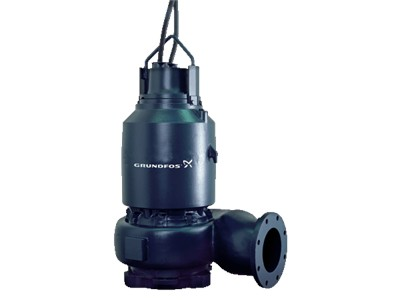
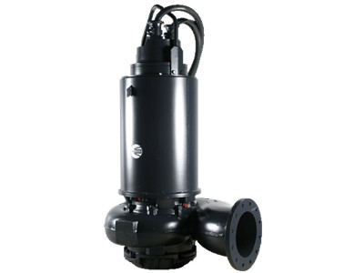
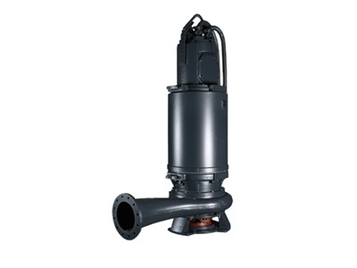
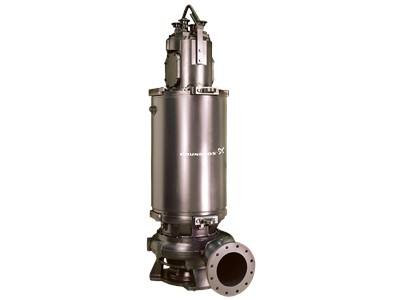
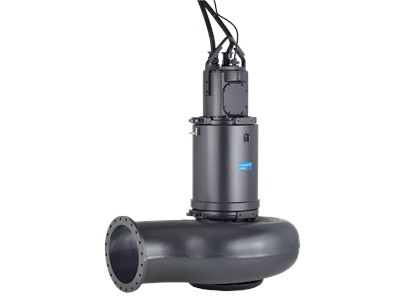

📞 032.347.0815~7
한국그런포스펌프(주) 프리미엄 공식 대리점 | 1995년 설립
✉ hyoilpump@daum.net
프리플로우 채널 임펠러 수중 하수 펌프 · 범위 62 / 66 / 70 / 72 / 74 / 78
≤50 kW ~ ≤520 kW · 최대 유량 1,890 l/s · 도시·산업 하수 전용
S 펌프는 도시 및 산업 분야의 하수·폐수 펌핑을 위해 특별 설계된 프리플로우 채널 임펠러 수중 펌프입니다. 채널 임펠러로 고형물 크기에 제한 없이 이송 가능하며, SmartTrim·SmartSeal 등 그런포스 특허 시스템을 탑재하여 장기 최고 성능을 유지합니다.





